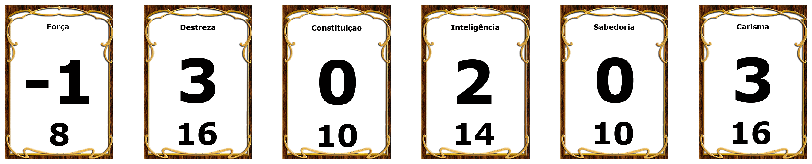
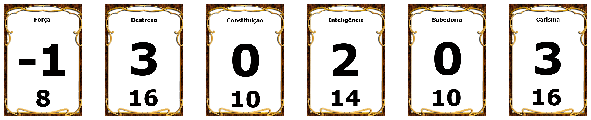

Zeth Torment
Ladino - Tiefling
Biografia
Personalidade
Características
Atributos
Itens
Biografia
Zeth Torment nasceu em uma cidade grande, onde as classes sociais eram explícitamente nítidas, morando na periferia junto de seus pais, cresceu uma criança com muitas habilidades em se esconder e evitar problemas, um certo dia seus pais morreram por
conta de saúde, desde então ele tem de roubar para conseguir viver.Ele foi ensinado a desconfiar de tudo e de todos, com muita destreza e furtividade, roubava a parte rica da cidade facilmente, sua fama na cidade ficou conhecida como "A Tormenta"
na época.
Conforme o tempo passou, ele havia se tornado um dos maiores ladrão da cidade inteira, guardava todos os bens roubados na casa onde morava, a casa dos pais falecidos. Em uma sexta-feira, havia chegado em casa após um tarde exaustiva
fugindo de guardas, quando chega em sua casa, caí em uma armadilha de contrabandistas que vendiam itens valiosos, amarraram-no, roubaram todos os seus pertences, Como já conheciam a sua fama de "Tormenta", decidiram dar uma lição à Zeth, esquentaram
uma faca e marcaram com um corte flamejante, a letra "T" em sua barriga, e vão embora levando os pertences da casa, inclusive a coisa mais valiosa que Zeth tinha, a adaga que seu pai havia feito especialmente para ele, a única memória que tinha
de seu falecido. O tempo passou, e Zeth procura informações sobre esses contrabandistas, e toda vez que alguém mexe com ele ou ele esbarra com um contrabandista, ele coloca fogo em sua espada, e faz o mesmo corte que fizeram com ele, assim se
fica conhecido e começa a ficar temído como "Zeth Torment - Espada Flamejante". Após deixar marcado a maioria dos contrabandistas da região, ele encontra um que dá informações sobre o que ele procura, ele fala que eles estavam roubando tudo da
cidade para vender para um reino não muito distante dali...
Zeth tem um novo objetivo em sua jornada que está prestes a começar, recuperar a lâmina que lhe foi roubada, acabar com todos os contrabandistas deixando a sua cicatriz marcada em cada
um, e por fim, tornar o seu nome temido por todos...
"Zeth Torment" é um personagem fictício criado por Gustavo para jogar a "mesa": Things We Lost in The Fire de RPG D&D
Personalidade
Chaotic Neutral
- TRAÇOS DE PERSONALIDADE
- IDEAIS
- VÍNCULOS
- EFEITOS
Eu sou incrivelmente receoso em confiar. Aqueles que parecem mais amigáveis geralmente têm mais a esconder.
Eu estou sempre calmo, não importa a situação. Eu nunca levanto minha voz ou deixo minhas emoções me controlarem.
Liberdade. Correntes foram feitas para serem partidas, assim como aqueles que as forjaram. (Caótico)
Eu sou leal aos meus amigos, não a qualquer ideal, e todos sabem que posso viajar até o Estige por aqueles que me importo. (Neutro)
Algo importante foi roubado de mim, e eu vou recuperá-lo e fazer todos eles pagarem.
Um inocente foi preso por um crime que eu cometi. Por mim tudo bem.
Características
- VISÃO NO ESCURO
- RESISTÊNCIA INFERNAL
- TAUMATURGIA
- Sua voz ressoa com o triplo do volume normal por 1 minuto.
- Você provoca tremores inofensivos no solo por 1 minuto.
- Você cria, instantaneamente, um som que se origina de um ponto, à sua escolha, dentro do alcance, como o barulho de um trovão, o gralhar de um corvo ou sussurros sinistros.
- Você, instantaneamente, faz uma porta ou janela destrancada se abrir ou se fechar.
- Você altera a aparência dos seus olhos por 1 minuto.
- ATAQUE FURTIVO
- ESPECIALIZAÇÃO
- CONTATO CRIMINAL
Racial: Tiefling
Graças a sua herança infernal, você tem uma visão superior no escuro e na penumbra. Você enxerga na penumbra a até 18 metros como se fosse luz plena, e no escuro como se fosse na penumbra. Você não pode discernir cores no escuro, apenas tons de cinza.
Racial: Tiefling
Você possui resistência a dano de fogo.
Racial: Tiefling
Tempo de Conjuração: 1 ação Alcance: 9 metros
Componentes: V
Duração: Até 1 minuto
Você manifesta pequenas maravilhas, um sinal de poder sobrenatural, dentro do alcance. Você cria um
dos seguintes
efeitos mágicos dentro do alcance:
Se você conjurar essa magia diversas vezes, você pode ter até três dos efeitos de 1 minuto ativos por vez, e você pode dissipar um desses efeitos com uma ação.
Classe: Ladino
A partir do 1º nível, você sabe como atacar sutilmente e explorar a distração de seus
inimigos. Uma vez por turno, você pode adicionar 1d6 nas jogadas de dano contra qualquer criatura que
acertar, desde que tenha vantagem nas jogadas de ataque. O ataque deve ser com uma arma de acuidade ou à distância.
Você não precisa ter vantagem nas jogadas de ataque se outro inimigo do seu alvo estiver a 1,5 metro de distância dele,
desde que este inimigo não esteja incapacitado e você não tenha desvantagem nas jogadas de ataque.
A quantidade de dano extra aumenta conforme você ganha níveis nessa classe, como mostrado na coluna Ataque Furtivo da
tabela O Ladino.
Classe: Ladino
No 1º nível, você escolhe duas de suas perícias que seja proficiente, ou uma perícia que seja proficiente
e ferramentas de ladrão. Seu bônus de proficiência é dobrado em qualquer teste de habilidade que fizer com elas.
No 6º nível, você pode escolher outras duas de suas proficiências (em perícias ou ferramentas de ladrão) para ganhar esse benefício.
Classe: Ladino
Você possui contatos de confiança que agem como seus informantes em uma rede criminosa. Você sabe como se comunicar com eles mesmo em grandes distâncias. Você conhece em especial os mensageiros locais, mestres de caravana corruptos, e marinheiros escusos que podem transmitir seus recados.
Atributos
 
